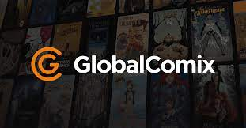

Free Comics Websites
Webtoon is a type of digital comic or graphic novel that originated in South Korea and is now popular all over the world. Unlike traditional comics that are printed on paper, webtoons are published online and optimized for reading on mobile devices. Webtoons often have a vertical scrolling format, with each episode or chapter consisting of one long vertical strip of panels that can be easily read by scrolling down the screen. They can cover a wide range of genres, including romance, action, fantasy, comedy, and more.

Lezhin Comics is a digital comic platform that offers a wide selection of comics and webtoons from various genres. It was founded in South Korea in 2013 and has since expanded its reach to other countries including the United States, Japan, and Taiwan. Lezhin Comics features a diverse range of comics, including romance, drama, action, thriller, comedy, and more. Users can read the comics online or through the Lezhin Comics mobile app, which is available for both iOS and Android devices.
If you have a classic, American-style comic that wouldn’t look lost on the shelf next to Marvel and DC, then GlobalComix might be the choice for you. For action, sci-fi, steampunk, superhero stories, and more, this smaller platform is still home to over 10,000 books.To earn money, you can put certain chapters behind a general paywall for subscribers to the site, or set up early-access perks for your most loyal readers.
